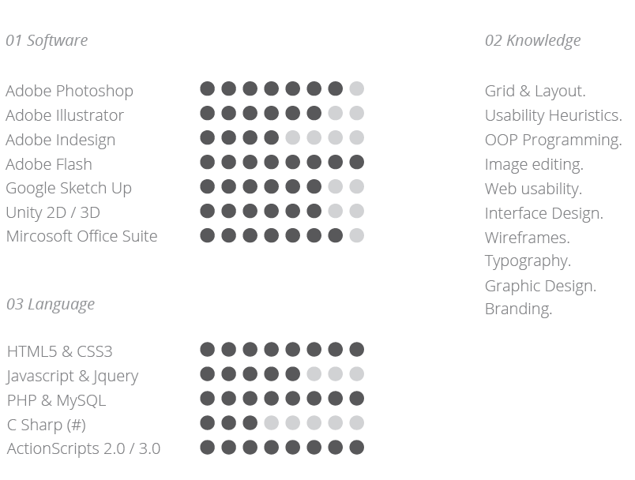

Henry Lo
About Henry
Hi. My name is Henry Lo. A young university student attending SFU's School of Interactive Arts & Technology program. And I love to create my own stuffs.
I favour minimalistic designs - I like designs that has little designs in them. I also favour things that are not in the common trend. I seek to try things, technology things with my own hands.
